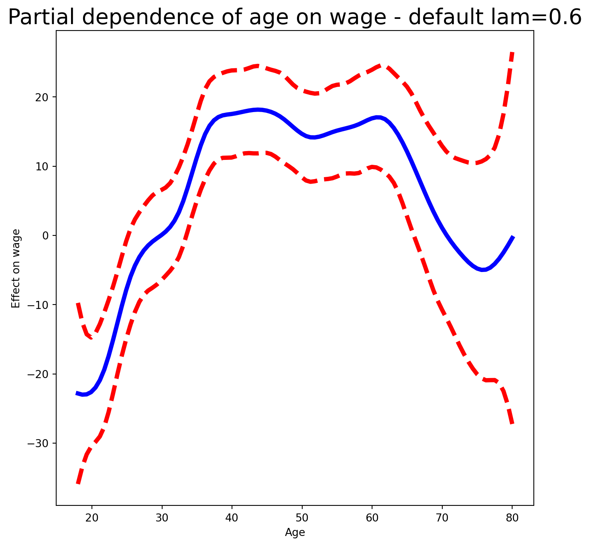
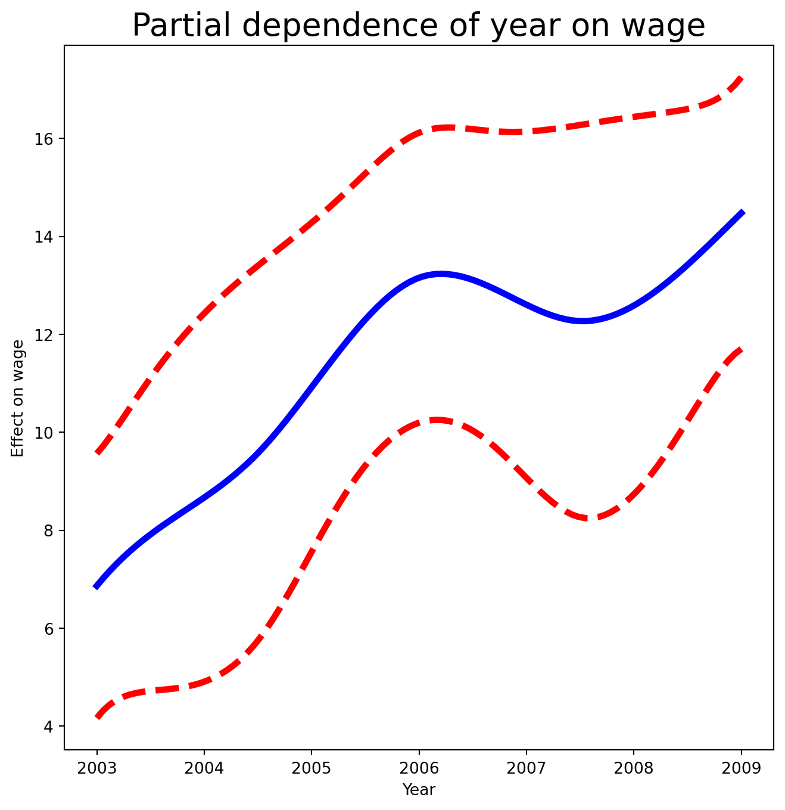
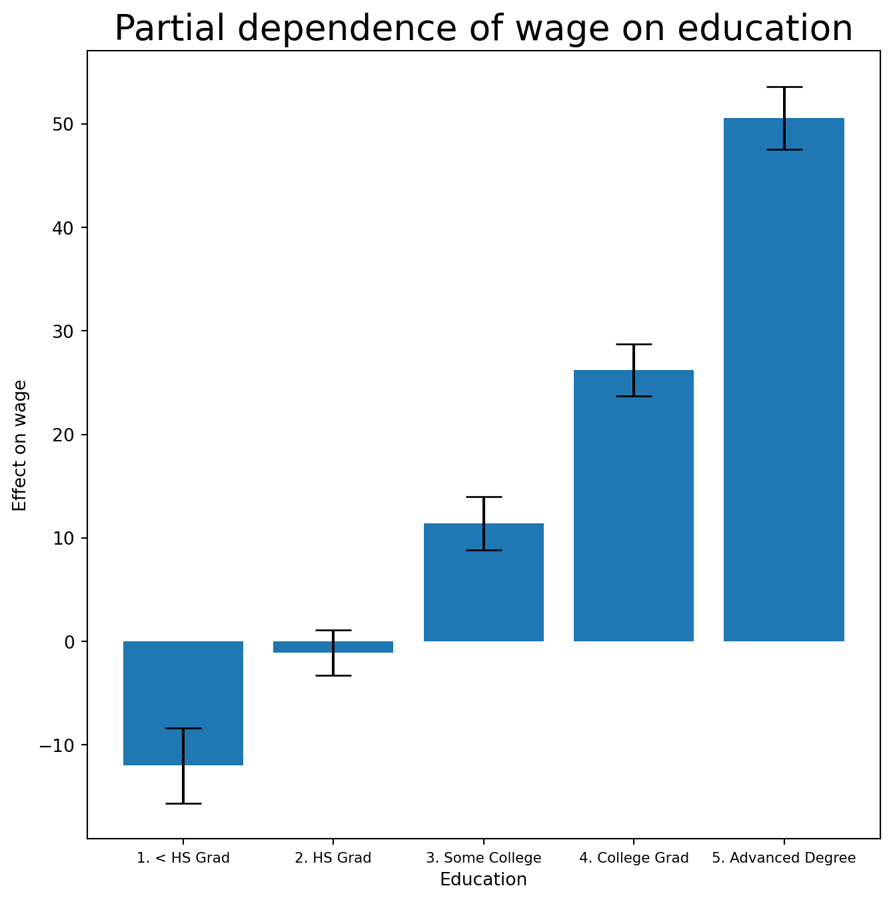
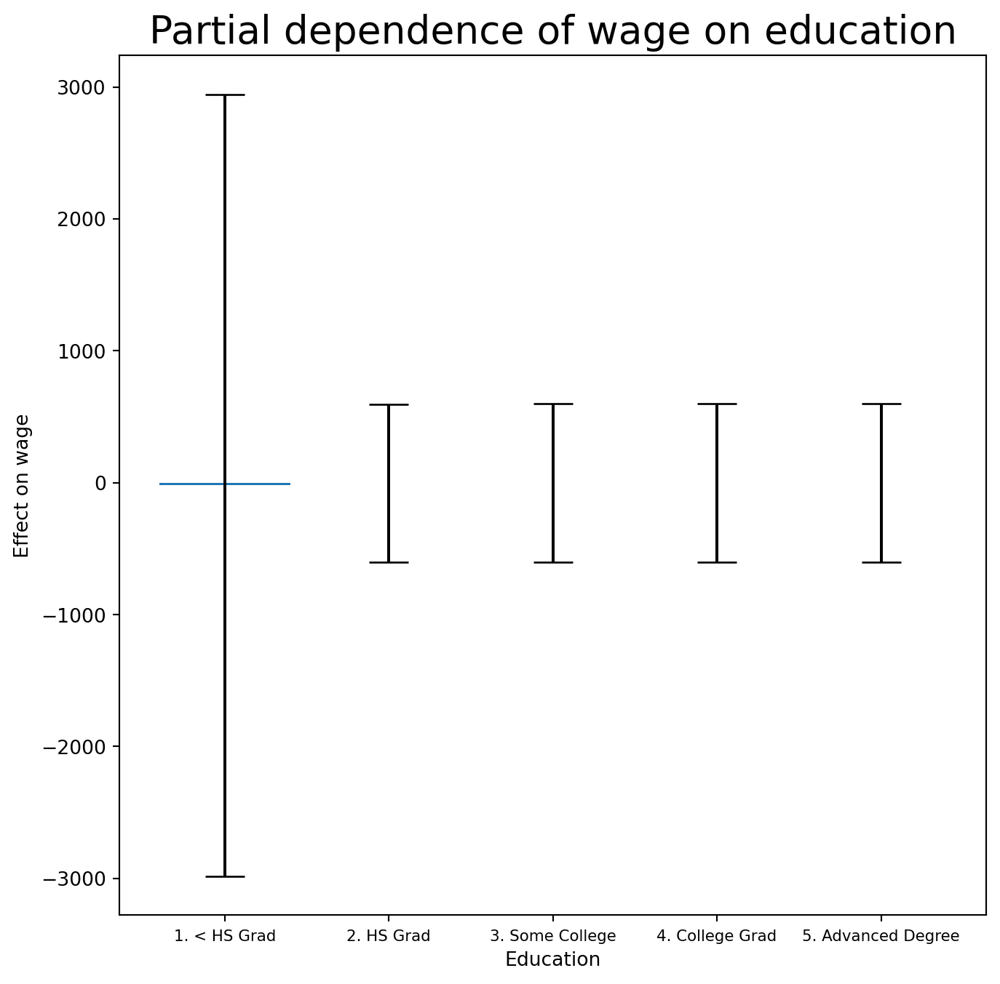
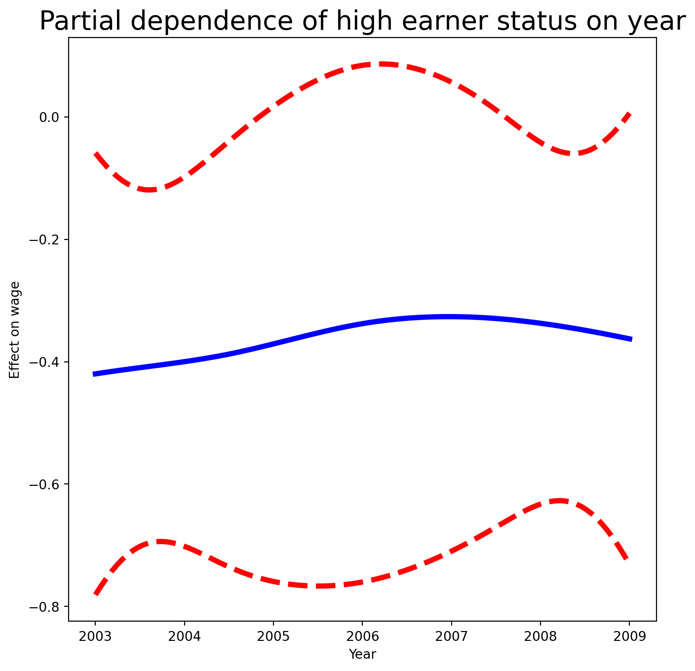
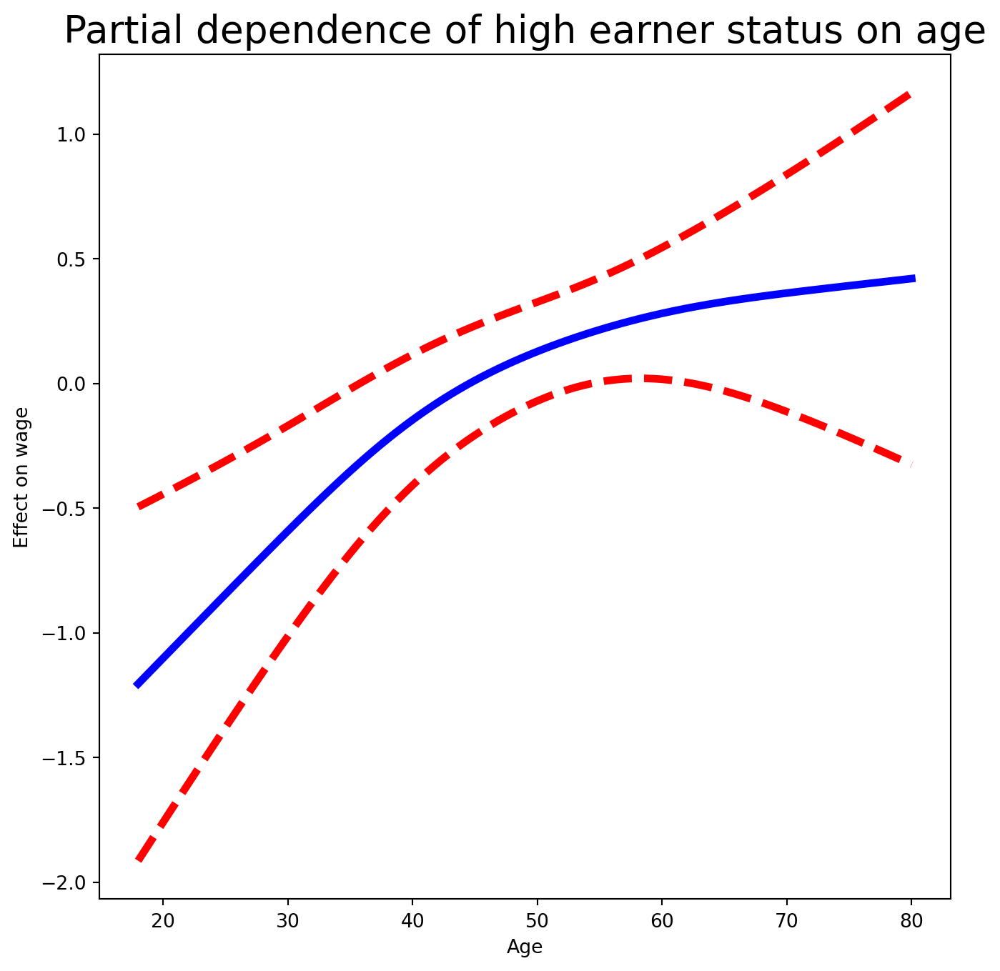

Students who prefer R can work through the corresponding chapter of Emil Hvitfeldt’s ISLR tidymodels labs.
In this lab we demonstrate some of the nonlinear models discussed in this chapter. We use the Wage data as a running example, and show that many of the complex non-linear fitting procedures discussed can easily be implemented in Python.
Setup
As usual, we start with some of our standard imports.
import numpy as np, pandas as pdfrom matplotlib.pyplot import subplotsimport statsmodels.api as smfrom ISLP import load_datafrom ISLP.models import (summarize, poly, ModelSpec as MS)from statsmodels.stats.anova import anova_lm
We again collect the new imports needed for this lab. Many of these are developed specifically for the ISLP package.
from pygam import (s as s_gam, l as l_gam, f as f_gam, LinearGAM, LogisticGAM)from ISLP.transforms import (BSpline, NaturalSpline)from ISLP.models import bs, nsfrom ISLP.pygam import (approx_lam, degrees_of_freedom, plot as plot_gam, anova as anova_gam)
Polynomial Regression and Step Functions
Exercise 1. Load the Wage data with load_data('Wage'). Store the response (wage) as y and the predictor (age) as age.
poly() is a helper that sets up the transformation; Poly() is the workhorse that computes it. The first line above runs the fit() method on Wage, which stores any parameters needed by Poly() on the training data so that subsequent transform() calls (on new data, or inside the plotting function below) use the same basis.
Exercise 3. Build a grid age_grid of 100 evenly spaced values spanning the observed range of age, and wrap it in a single-column DataFrame named age_df.
Exercise 4. Write a function plot_wage_fit(age_df, basis, title) that fits OLS on the supplied basis, evaluates it on age_df, and plots the raw data with the fitted curve and its 95% confidence bands.
The alpha argument to ax.scatter() adds transparency that gives a visual indication of density. zip() bundles the three lines (fitted mean and two confidence bands) with their colours and line types for the for loop.
Exercise 5. Use your helper to plot the degree-4 polynomial fit.
Exercise 6. With polynomial regression we must decide on the degree of the polynomial to use. Fit polynomial models in age of degrees 1 through 5, and use anova_lm() to test which degree is sufficient.
Solution
models = [MS([poly('age', degree=d)])for d inrange(1, 6)]Xs = [model.fit_transform(Wage) for model in models]anova_lm(*[sm.OLS(y, X_).fit()for X_ in Xs])
df_resid
ssr
df_diff
ss_diff
F
Pr(>F)
0
2998.0
5.022216e+06
0.0
NaN
NaN
NaN
1
2997.0
4.793430e+06
1.0
228786.010128
143.593107
2.363850e-32
2
2996.0
4.777674e+06
1.0
15755.693664
9.888756
1.679202e-03
3
2995.0
4.771604e+06
1.0
6070.152124
3.809813
5.104620e-02
4
2994.0
4.770322e+06
1.0
1282.563017
0.804976
3.696820e-01
The * unpacks the list of fitted models for anova_lm()’s variable argument list. The p-value comparing linear models[0] to quadratic models[1] is essentially zero, and the cubic-vs-quartic comparison is roughly 5%, while degree 5 is unnecessary (p = 0.37). Either a cubic or a quartic polynomial gives a reasonable fit.
Exercise 7. Repeat the ANOVA, but with a linear term in education included in each model alongside a polynomial in age of degrees 1, 2, 3.
Solution
models = [MS(['education', poly('age', degree=d)])for d inrange(1, 4)]XEs = [model.fit_transform(Wage)for model in models]anova_lm(*[sm.OLS(y, X_).fit() for X_ in XEs])
df_resid
ssr
df_diff
ss_diff
F
Pr(>F)
0
2997.0
3.902335e+06
0.0
NaN
NaN
NaN
1
2996.0
3.759472e+06
1.0
142862.701185
113.991883
3.838075e-26
2
2995.0
3.753546e+06
1.0
5926.207070
4.728593
2.974318e-02
The ANOVA approach works whether or not the polynomials are orthogonal, provided the models are nested. As an alternative, we could choose the polynomial degree by cross-validation (Chapter 5).
Exercise 8. Now consider predicting whether someone earns more than $250,000 per year. Fit a logistic regression (use sm.GLM with a Binomial family) of wage > 250 on the same 4th-degree polynomial basis in age, and produce a plot of the predicted probability vs. age (with confidence bands and a rug plot).
Solution
X = poly_age.transform(Wage)high_earn = Wage['high_earn'] = y >250# shorthandglm = sm.GLM(y >250, X, family=sm.families.Binomial())B = glm.fit()summarize(B)
coef
std err
z
P>|z|
intercept
-4.3012
0.345
-12.457
0.000
poly(age, degree=4)[0]
71.9642
26.133
2.754
0.006
poly(age, degree=4)[1]
-85.7729
35.929
-2.387
0.017
poly(age, degree=4)[2]
34.1626
19.697
1.734
0.083
poly(age, degree=4)[3]
-47.4008
24.105
-1.966
0.049
(The double assignment high_earn = Wage['high_earn'] = y > 250 both binds the local variable high_earn and stores the indicator as a new column on the Wage DataFrame. We’ll re-use that column in Exercises 29 and 30.)
The age values above 250 are shown as gray marks at the top of the plot; those below 250 at the bottom. A small amount of jitter prevents identical-age points from overlapping. This is called a rug plot.
Exercise 9. Fit a step-function regression: discretise age into 4 quantile-based bins with pd.qcut(), build dummy columns with pd.get_dummies(), and fit OLS.
pd.qcut() chose cutpoints at the 25%, 50% and 75% quantiles, so we get four bins. pd.get_dummies() (unlike the usual model-matrix convention) keeps all category levels; combined with no intercept, each coefficient is the average wage in its bin. For non-quantile cutpoints, use pd.cut() instead.
Splines
Exercise 10. Use BSpline() from ISLP.transforms with internal_knots=[25, 40, 60] and intercept=True to build a cubic B-spline basis for age. What shape is the resulting design matrix?
A cubic B-spline with 3 interior knots yields a 7-column matrix (3 + degree + 1 with intercept=True).
Exercise 11. Now fit a cubic spline regression of wage on age using the helper bs() inside MS(). Pass name='bs(age)' to clean up the column labels in the summary.
Note there are 6 spline coefficients rather than 7 because bs() defaults to intercept=False — the basis would normally be 7 columns, but one is dropped to accommodate the model’s overall intercept.
Exercise 12. Instead of specifying knots, ask BSpline for df=6. Inspect internal_knots_ to see where the knots ended up.
Solution
BSpline(df=6).fit(age).internal_knots_
array([33.75, 42. , 51. ])
With df=6 and cubic splines, three knots are placed at the 25%, 50% and 75% quantiles of age — ages 33.75, 42.0, and 51.0.
Exercise 13. B-splines need not be cubic. Fit a degree-0 spline with df=3 and compare the coefficients to your earlier qcut() step-function fit.
Degree-0 B-splines are piecewise constant — equivalent to the step function from Exercise 9. With df=3 (degree 0), the knots are again at the same three quantiles. The coefficients look different because of the coding: here the intercept is a column of ones and the remaining three coefficients are increments relative to the first bin. The sums approximately recover the per-bin means (slight differences are because qcut() uses ≤ while bs() uses < at the boundaries).
Exercise 14. Fit a natural cubic spline with 5 degrees of freedom using ns(), and plot the fit with plot_wage_fit().
Exercise 15. A smoothing spline is a special case of a GAM with squared-error loss and a single feature. Fit LinearGAM(s_gam(0, lam=0.6)) to predict wage from age. (Remember pygam expects a 2-D feature matrix.)
s_gam(0, ...) says “apply a smoothing spline to column 0 of the feature matrix”. lam is the penalty parameter \(\lambda\). The -1 inside .reshape((-1, 1)) tells NumPy to infer that dimension’s size.
Exercise 16. Investigate how the fit changes with the smoothing parameter. Loop lam over np.logspace(-2, 6, 5) and plot each resulting fit.
Exercise 17.pygam can search for an optimal smoothing parameter. Reproduce the plot from Exercise 16, call .gridsearch(X_age, y), and add the resulting fit on top.
Exercise 18. It’s often more interpretable to specify the effective degrees of freedom than lam. Use approx_lam() from ISLP.pygam to find a lam giving roughly 4 degrees of freedom for the age term, and verify with degrees_of_freedom().
A value of df=1 corresponds to a straight-line fit.
Additive Models with Several Terms
Exercise 20. Build a GAM “by hand”: use natural splines (NaturalSpline) with df=4 for age and df=5 for year, get dummies for education, stack them all into a model matrix X_bh, and fit OLS.
We use all columns of the indicator matrix for education (no intercept), and stack the three component matrices horizontally to form X_bh.
Exercise 21. Construct a partial-dependence plot for age from the by-hand GAM: predict on a matrix where all columns except those for age are held at their column means, and the age columns are swept across age_grid.
The idea is to create a new prediction matrix in which all but the columns for age are held constant at the training-data means; the four age columns are filled with the natural spline basis evaluated at the 100 values in age_grid.
Exercise 23. Now fit the same GAM using smoothing splines via pygam. Build LinearGAM(s_gam(0) + s_gam(1, n_splines=7) + f_gam(2, lam=0)), where f_gam is a factor term for education. (Convert education to numeric codes with .cat.codes.) Then plot the partial dependence for age using plot_gam() from ISLP.pygam.
fig, ax = subplots(figsize=(8, 8))plot_gam(gam_full, 0, ax=ax)ax.set_xlabel('Age')ax.set_ylabel('Effect on wage')ax.set_title('Partial dependence of age on wage - default lam=0.6', fontsize=20);

year has only 7 unique values, so we use 7 basis functions. lam=0 on the factor term avoids any shrinkage. The default lam=0.6 for age produces a noticeably wiggly fit.
Exercise 24. Re-tune gam_full so that the age and year smoothers each have ~4 degrees of freedom (use approx_lam() with df=4+1), then re-plot the partial dependence for age and for year.
Note that updating age_term.lam updates gam_full.terms[0] in place.
fig, ax = subplots(figsize=(8, 8))plot_gam(gam_full,1, ax=ax)ax.set_xlabel('Year')ax.set_ylabel('Effect on wage')ax.set_title('Partial dependence of year on wage', fontsize=20)
Text(0.5, 1.0, 'Partial dependence of year on wage')

Exercise 25. Plot the partial dependence for education — a categorical term gets a different style of plot, suited to a set of fitted constants per level.
Solution
fig, ax = subplots(figsize=(8, 8))ax = plot_gam(gam_full, 2)ax.set_xlabel('Education')ax.set_ylabel('Effect on wage')ax.set_title('Partial dependence of wage on education', fontsize=20);ax.set_xticklabels(Wage['education'].cat.categories, fontsize=8);

ANOVA Tests for Additive Models
Exercise 26. In all our models, the function of year looks fairly linear. Compare three models by ANOVA: a GAM that excludesyear (\(\mathcal{M}_1\)), a GAM that uses a linear term in year (\(\mathcal{M}_2\)), and the full GAM with a smoothing spline in year (\(\mathcal{M}_3\)). What do you conclude?
Note the reuse of age_term — that term already has its lam set to yield 4 df, and we want to keep that across all three models.
There is compelling evidence that a GAM with a linear year term is better than one that omits year (p ≈ 0.002). However, there is no evidence that a nonlinear function of year is needed (p ≈ 0.435). So \(\mathcal{M}_2\) is preferred.
Very strong evidence that a nonlinear term is required for age.
Exercise 28. Print gam_full.summary() and use gam_full.predict() to generate fitted values on the training set.
Solution
gam_full.summary()
LinearGAM
=============================================== ==========================================================
Distribution: NormalDist Effective DoF: 12.9927
Link Function: IdentityLink Log Likelihood: -14930.261
Number of Samples: 3000 AIC: 29888.5074
AICc: 29888.648
GCV: 1246.1129
Scale: 35.1625
Pseudo R-Squared: 0.2928
==========================================================================================================
Feature Function Lambda Rank EDoF P > x Sig. Code
================================= ==================== ============ ============ ============ ============
s(0) [465.0491] 20 5.1 1.11e-16 ***
s(1) [2.1564] 7 4.0 8.10e-03 **
f(2) [0] 5 4.0 1.11e-16 ***
intercept 1 0.0 1.11e-16 ***
==========================================================================================================
Significance codes: 0 '***' 0.001 '**' 0.01 '*' 0.05 '.' 0.1 ' ' 1
WARNING: Fitting splines and a linear function to a feature introduces a model identifiability problem
which can cause p-values to appear significant when they are not.
WARNING: p-values calculated in this manner behave correctly for un-penalized models or models with
known smoothing parameters, but when smoothing parameters have been estimated, the p-values
are typically lower than they should be, meaning that the tests reject the null too readily.
Yhat = gam_full.predict(Xgam)
Exercise 29. Fit a logistic GAM for high_earn (i.e. wage > 250) using LogisticGAM(age_term + l_gam(1, lam=0) + f_gam(2, lam=0)). Plot the partial dependence for education.
fig, ax = subplots(figsize=(8, 8))ax = plot_gam(gam_logit, 2)ax.set_xlabel('Education')ax.set_ylabel('Effect on wage')ax.set_title('Partial dependence of wage on education', fontsize=20);ax.set_xticklabels(Wage['education'].cat.categories, fontsize=8);

The fit looks flat with very wide error bars on the first category.
Exercise 30. Cross-tabulate high_earn against education. What do you see?
Solution
pd.crosstab(Wage['high_earn'], Wage['education'])
education
1. < HS Grad
2. HS Grad
3. Some College
4. College Grad
5. Advanced Degree
high_earn
False
268
966
643
663
381
True
0
5
7
22
45
There are no high earners in the lowest education category, so the logistic GAM has nothing to estimate there.
Exercise 31. Refit the logistic GAM excluding observations in the “1. < HS Grad” category, then plot the partial dependence for education, year, and age.
fig, ax = subplots(figsize=(8, 8))ax = plot_gam(gam_logit_, 2)ax.set_xlabel('Education')ax.set_ylabel('Effect on wage')ax.set_title('Partial dependence of high earner status on education', fontsize=20);ax.set_xticklabels(Wage['education'].cat.categories[1:], fontsize=8);
fig, ax = subplots(figsize=(8, 8))ax = plot_gam(gam_logit_, 1)ax.set_xlabel('Year')ax.set_ylabel('Effect on wage')ax.set_title('Partial dependence of high earner status on year', fontsize=20);

fig, ax = subplots(figsize=(8, 8))ax = plot_gam(gam_logit_, 0)ax.set_xlabel('Age')ax.set_ylabel('Effect on wage')ax.set_title('Partial dependence of high earner status on age', fontsize=20);

Local Regression
Exercise 32. Finally, use sm.nonparametric.lowess to fit local linear regression models with spans of 0.2 and 0.5, and plot them together. Some implementations of GAMs allow local-regression terms; pygam does not.